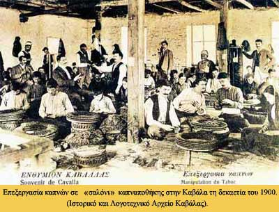

|

Η συγκρότηση της καπνεργατικής τάξης στην Ελλάδα παρουσιάζει εξαιρετικό ενδιαφέρον. Σε αντίθεση με άλλα τμήματα της ελληνικής εργατικής τάξης, οι καπνεργάτες παρουσιάζουν ως τάξη μια ιστορική συνέχεια που ξεκινάει από την πολυεθνοτική Θεσσαλονίκη της οθωμανικής περιόδου. Εκεί, στα καπνομάγαζα της πόλης, όπου απασχολούνταν περίπου 10.000 εργάτες και εργάτριες, δημιουργήθηκε το σωματείο των καπνεργατών, ιδεολογικά προσανατολισμένο προς τις σοσιαλιστικές αντιλήψεις της «Φεντερασιόν». Σταδιακά με την εξάπλωση της καλλιέργειας του καπνού δημιουργήθηκαν νέα σωματεία. Σπουδαία συνδικαλιστική δράση ανέπτυξε αυτό της Καβάλας, που εξελίχθηκε στις αρχές του 20ου αιώνα, στο μεγαλύτερο σωματείο της Μακεδονίας. Στον υπόλοιπο ελλαδικό χώρο σημαντική δράση ανέπτυξαν οι καπνεργατικές ενώσεις του Αγρινίου και του Βόλου.
Η μαχητικότητα του καπνεργατικού κινήματος πήγαζε και από τις ιδιομορφίες της εργασιακής διαδικασίας, η οποία ελεγχόταν από τους καπνεργάτες. Το «σαλόνι» της καπναποθήκης, ο χώρος δηλαδή όπου άνδρες και γυναίκες έκαναν τη διαλογή του καπνού, ενίσχυε τη συλλογικότητα και ενδυνάμωνε τη συνοχή και τη μαχητικότητα της καπνεργατικής τάξης. Παράλληλα, τουλάχιστον μέχρι το 1925 που ο συνδικαλισμός ήταν ισχυρός, υπήρχαν αντιπρόσωποι του σωματείου σε κάθε κέντρο επεξεργασίας του καπνού, οι οποίοι είχαν λόγο και για τις προσλήψεις. Είναι, λοιπόν, φανερό ότι μέσω των επιτροπών σαλονιών και των εκπροσώπων του σωματείου στα καπνομάγαζα, οι καπνεργάτες εξασφάλιζαν τον έλεγχο της εργασιακής διαδικασίας. Δεν ήταν λοιπόν καθόλου τυχαίο το γεγονός ότι τα σωματεία των καπνεργατών και η καπνεργατική ομοσπονδία ήταν από τα καλύτερα οργανωμένα συνδικάτα στην Ελλάδα.
Σύμφωνα με τον Αβραάμ Μπεναρόγια, ηγετικό στέλεχος της «Φεντερασιόν», το 1921 περίπου το 90% των καπνεργατών ήταν ήδη συνδικαλιστικά οργανωμένοι, ενώ το 1928 οι καπνεργάτες αποτελούσαν το 1/3 των μελών της Γενικής Συνομοσπονδίας Εργατών Ελλάδος (ΓΣΕΕ)
|
|